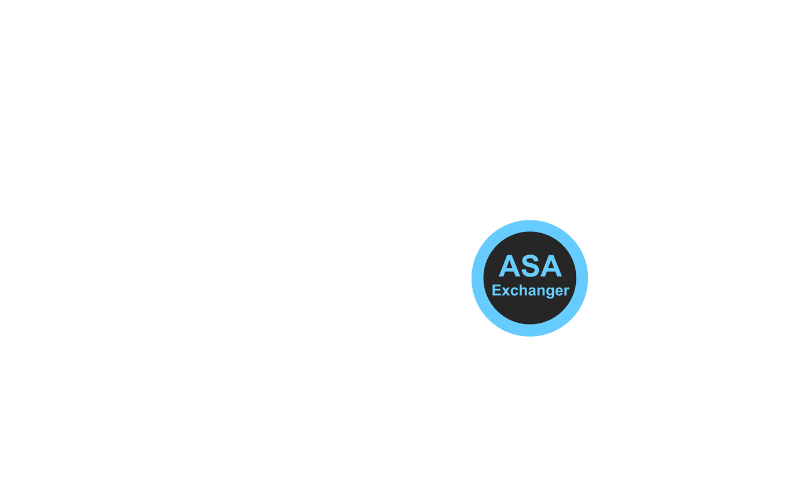
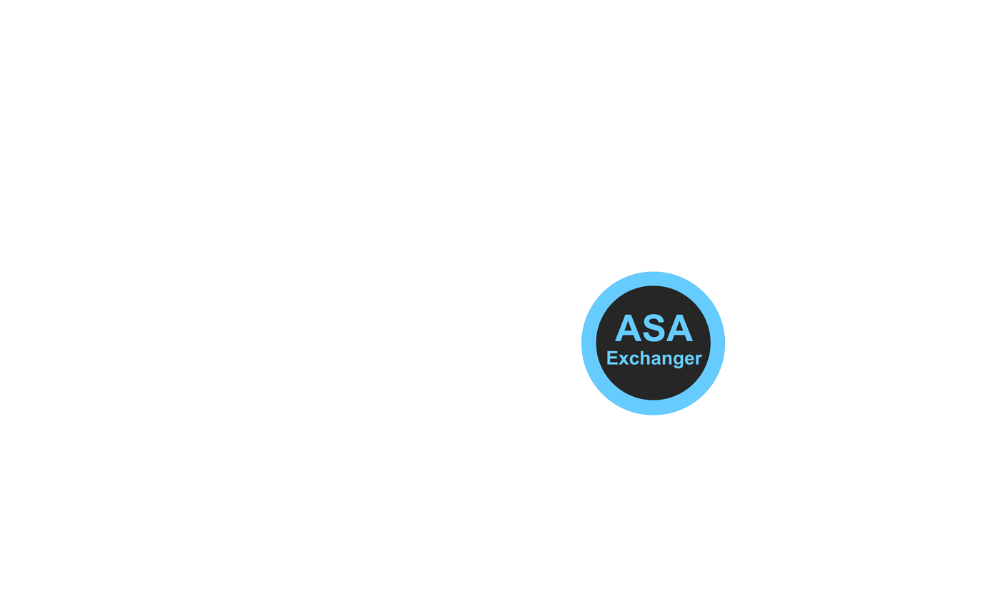

ASA APP serve APP
ASA Exchanger
ASA Exchanger is a central network service
of GAUSIAN for data and service exchanging between
worldwide APPs.
Service APPs
Service APPs are hosted on servers
to provide data and services like
"searching database of talented people",
"matching better vendors",
"tracking shipments"...
User APPs
User APPs are run on client side.
they can get data and service from ASA system.
 
